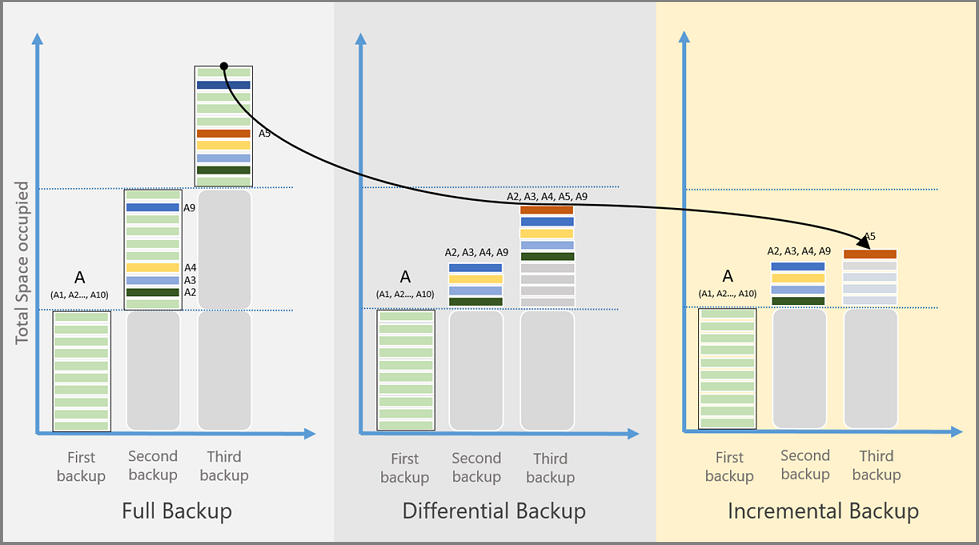

Az Concepts
Private endpoint¶
A private endpoint is a network interface that uses a private IP address from your virtual network. This network interface connects you privately and securely to a service that's powered by Azure Private Link. By enabling a private endpoint, you're bringing the service into your virtual network.
The service could be an Azure service such as:
- Azure Storage
- Azure Cosmos DB
- Azure SQL Database
Redundancy in Azure¶
These are the redundancy options in Azure
-
LRS (Locally Redundant Storage): In LRS, you will have 3 copies of data within a single data center in different fault domains. The copies will always be up-to-date, and all changes are written to the storage account
synchronously. -
ZRS (Zonal Redundant Storage): It saves one copy of an instance in 3 AZs of a region.
-
GRS (Geo Redundant Storage): Data is replicated to a secondary region which is selected by Azure based on the
regional pairs. This isolation ensures that if the primary is affected due to any calamity, it shouldn’t affect the secondary region.Caution to read data in GRS
This method replicates the data to the
secondary region; however, the data in the secondary is not readable. The data can be read only if a failover is initiated to the secondary region. The failover can be initiated by the customer manually or by Microsoft in the case of a regional outage. -
Read-Access Geo Redundant Storage (RA-GRS) : In RA-GRS, the replication works in the same way as GRS. The key difference here is that you have the provision to read from the secondary region regardless of whether a failover is initiated. The secondary region is always available for read requests.
More expensive?
It is more expensive compared to GRS.
-
GZRS (Geo Zone Redundant Storage): In GZRS you replicate the data synchronously in the primary region using ZRS, and then this data is replicated to the secondary region (as 3 copies in the same AZ).
SKU¶
SKU is short for Stock-keeping-Unit. Each SKU is catered toward a specific scenario and has differences in scale, features, and pricing. In layman's language, SKU refers to an Item ready for sale.
Azure supports both Basic and Standard SKU. For creating an AKS cluster, Azure uses Standard SKU. By utilizing the Standard SKU Load Balancer, Azure offers services like availability zones and larger backend pool sizes.
Region Pairs¶
Each Azure region is paired with another region within the same geography (such as US, Europe, or Asia). This approach allows for the replication of resources, such as VM storage, across geography that should reduce the likelihood of natural disasters, etc affecting both regions at once.
Authorizing AZ Services¶
SPN Auth¶
- The name by which a client uniquely identifies an instance of a service. If you install multiple instances of a service on computers throughout a forest, each instance must have its own SPN. A given service instance can have multiple SPNs if there are multiple names that clients might use for authentication
- This allows a client application to request that the service authenticate an account even if the client does not have the account name.
- If you install multiple instances of a service on computers throughout a forest, each instance must have its own SPN. A given service instance can have multiple SPNs if there are multiple names that clients might use for authentication.
Did you registered your SPN?
Before the Kerberos authentication service can use an SPN to authenticate a service, the SPN must be registered on the account object that the service instance uses to log on. A given SPN can be registered on only one account
SAS URI¶
SAS is a secure way to grant limited access to the resources in your storage account to the external world (clients, apps), without compromising your account keys. Shared Access Signature (SAS) is used for controlling access to blob, file, table, and queue storage containers.
Never share the access key
You would not want to share an access key since it is like a root password to all the containers existing within the Azure Storage account. A shared access signature (SAS) provides secure delegated access to resources in your storage account.
It gives you granular control over the type of access you grant to clients, which includes -
- Interval – You can specify how long the SAS token should be valid by mentioning the start time and the expiry time.
- Permission – You can specify the permission at the granular level, for example, your clients just want to read the blob so grant them only read permission.
- IP Address – If you want
Azure Storage Accountto be accessed from a particular IP or range of IPs then you can specify an optional IP Address or range of IP addresses in yourSAS token. - Protocol – If you want the
Azure Storage accountto be accessed by eitherHTTPSorHTTP & HTTPS, you can specify the same in the SAS token.
Types of shared access signatures¶
Azure Storage supports three types of shared access signatures as shown below:
User delegation SAS (Recommended)¶
A user delegation SAS is secured with Azure Active Directory (Azure AD) credentials and also by the permissions specified for the SAS. A user delegation SAS applies to Blob storage only.
Recommended approach
A user delegation SAS provides superior security to a service SAS or an account SAS. A user delegation SAS is secured with Azure AD credentials so that you do not need to store your account key with your code.
Service SAS¶
A service SAS is secured with the storage account key. A service SAS delegates access to a resource in only one of the Azure Storage services:
BlobQueueTableFiles
Account SAS¶
An account SAS is secured with the storage account key. An account SAS delegates access to resources in one or more of the storage services. All the operations available via a service or user delegation SAS are also available via an account SAS.
You can also delegate access to the following:
- Service-level operations (For example, the Get/Set Service Properties and Get Service Stats operations).
- Read, write, and delete operations that aren't permitted with a service SAS.
Do you have access to the Account Key?
Both a service SAS and an account SAS are signed with the storage account key. To create a SAS that is signed with the account key, an application must have access to the account key.
SAS token¶
What is SAS Token?
The SAS token is a string that you generate on the client side, for example by using one of the Azure Storage client libraries. The SAS token is not tracked by Azure Storage in any way. You can create an unlimited number of SAS tokens on the client side. After you create a SAS, you can distribute it to client applications that require access to resources in your storage account.
Client applications provide the SAS URI to Azure Storage as part of a request. Then, the service checks the SAS parameters and the signature to verify that it is valid. If the service verifies that the signature is valid, then the request is authorized. Otherwise, the request is declined with error code 403 (Forbidden).

ACU¶
The Azure Compute Unit (ACU) is used to help understand the relative compute performance between different Azure series and size VMs. It is based on the A0 (extra small) having a value of 50. A VM with an ACU of 100 has twice the compute of a VM with an ACU of 50.
DR¶
Various methods of DR are
- Backup: Its copy of business critical data
- Cold site: Little or no infra deployed
- Hot site: Exact copy of infra
Difference between DR, HA and Backup
RPO¶
A recovery point objective (RPO) is the maximum length of time permitted that data can be restored from, which may or may not mean data loss. It is the age of the files or data in backup storage required to resume normal operations if a computer system or network failure occurs.
Tldr
RPO is the time from the last data backup until an incident occurred [that may have caused data loss] and RTO is the time that you set to recover the lost data.
RTO¶
The recovery time objective (RTO) is the targeted duration of time between the event of failure and the point where operations resume.
SLA¶
It is amount of time a service will be available. We need to use composite SLA as we have multiples services with different SLA's.
MTTR¶
It is the mean time a service will take to recover.
Always On availability groups¶
The Always On availability groups feature is a high-availability and disaster-recovery solution that provides an enterprise-level alternative to database mirroring. Introduced in SQL Server 2012 (11.x), Always On availability groups maximizes the availability of a set of user databases for an enterprise.
An availability group supports a failover environment for a discrete set of user databases, known as availability databases, that fail over together.
Number of availability replicas
Each set of availability database is hosted by an availability replica. Two types of availability replicas exist: a single primary replica, which hosts the primary databases, and 1 to 8 secondary replicas, each of which hosts a set of secondary databases and serves as a potential failover targets for the availability group.
Azure backup¶
It is a managed service for backing up and recovering workloads.
Azure File Backup can be used to automate the backup using a backup policy. Azure Snapshots can be used to take manual snapshots of your file share.
Azure recovery service vault¶
A traditional backup solution requires infrastructure to be deployed to host backup services; however, with the help of a lightweight agent, you will be able to back up your servers securely to the cloud. Regardless of whether the server is in Azure, on-premises, or in any other cloud provider, you can back up and save the data in Azure Recovery Services Vault.
Backup types¶
Various types of backups are:
- Full
- Differential
- Incremental

Full Backup¶
A full backup contains the entire data source. Takes more network bandwidth than differential or incremental backups.
It is used for initial backup
Differential Backup¶
A differential backup stores the blocks that changed since the initial full backup. Uses a smaller amount of network and storage, and doesn't keep redundant copies of unchanged data.
It is not used by Azure Backup as its inefficient.
Incremental Backup¶
An incremental backup stores only the blocks of data that changed since the previous backup. High storage and network efficiency.
Backup Process¶
Backup for on-prem and Cloud is done as shown below:
on-premises machines:¶
You can back up on-premises Windows machines directly to Azure by using theMicrosoft Azure Recovery Services (MARS) agent. Linux machines aren't supported.
You can back up on-premises machines to a backup server - either System Center Data Protection Manager (DPM) or Microsoft Azure Backup Server (MABS). You can then back up the backup server to a Recovery Services vault in Azure.
Azure VMs:¶
You can back up Azure VMs directly. Azure Backup installs a backup extension to the Azure VM agent that's running on the VM. This extension backs up the entire VM.
How to backup specific files in VM
You can back up specific files and folders on the Azure VM by running the MARS agent. Default replication used in Microsoft Azure Recovery Services (MARS) is ZRS
MARS Agent¶
- It can run on individual
on-premises Windows Servermachines to back up files, folders, and the system state. - Runs on
Azure VMsto back up files, folders, and the system state. - Runs on
DPM/MABS serversto back up the DPM/MABS local storage disk to Azure.
Azure Site recovery¶
Azure Site Recovery (ASR) It is a disaster recovery solution that can be used to replicate your VMs to a secondary region and fire them up during a regional outage. You can fail over from the Azure portal, and the infrastructure will be created in a secondary region within a few minutes.
Snapshots¶
When it comes to development and testing, managed disk snapshots offer a reliable and simple option to back up your VMs. Snapshots are independent read-only copies of the managed disk and can be used to create new managed disks.
Image¶
Images will contain the OS disk and all the data disks that were part of the VM. Using this custom image, you can create hundreds of VMs
Snapshot and Image difference?
Snapshot applies to a single disk; if you have a VM with multiple disks, then you need to create separate snapshots for each of these disks. In the case of images, all disks are taken into consideration while creating the image.